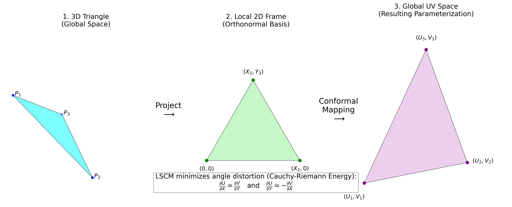

The Final Render
Least Squares Conformal Maps (LSCM)
Bypassing Blender's internal unwrap API entirely, I developed a custom Python implementation of the LSCM algorithm. By solving the Cauchy-Riemann equations across a massive sparse matrix using `scipy.sparse`, this algorithm calculates optimal, angle-preserving 2D UV coordinates for thousands of vertices.
- ✓ Conformal angle preservation for 3D-to-2D mapping
- ✓ Custom Sparse Matrix solver (A^T A x = A^T b)
- ✓ Pinning furthest vertices to prevent collapsing

Custom B-Spline Physics & Transitions
Standard physics engines lack exact deterministic timing. To precisely end the bouncing at Frame 70, I implemented custom quadratic (Degree 2) B-Splines to perfectly parameterize parabolic bouncing arcs. Utilizing knot multiplicity, mathematical continuity drops to $C^0$ upon hitting the floor, ensuring sharp, physically accurate impacts.
- ✓ Degree-2 B-Splines for sharp floor impacts ($C^0$ continuity)
- ✓ Degree-3 B-Splines for smooth $C^2$ ease-in texture fading
- ✓ Procedural Particle System triggers at exact rest frame
# Example of Knot Multiplicity to force C0 sharp impact
knots = [0, 0, 0, 1, 2, 2, 3, 4, 4, 5, 6, 6, 7, 7, 7]
# The repeated knots at the impacts break the smoothness
# and force the curve to interpolate exactly at the floor height.
def get_bounce_z(t, control_pts):
return bspline_eval(degree=2, knots=knots,
control_pts=control_pts, t=t)Procedural Shaders & Node Trees
The entire visual composition is constructed procedurally through the Python `bpy` API. A `ShaderNodeTexVoronoi` maps the initial asteroid base, while a scripted `MixRGB` node dynamically interpolates into an LSCM-mapped cosmic texture over exactly 7 seconds, coordinated mathematically with the B-Spline drop.
# LSCM Sparse System Core
def solve_lscm(vertices, faces):
# 1. Compute local orthographic frames
local, areas = _compute_local_frames(vertices, faces)
# 2. Build Cauchy-Riemann conformal energy matrix
A_full = sparse.coo_matrix(
(vals, (rows, cols)), shape=(n_rows, n_cols)
).tocsc()
# 3. Solve Normal Equations (A^T A x = A^T b)
x_free = spsolve(A_free.T @ A_free, A_free.T @ rhs)
return reconstruct_uv(x_free)